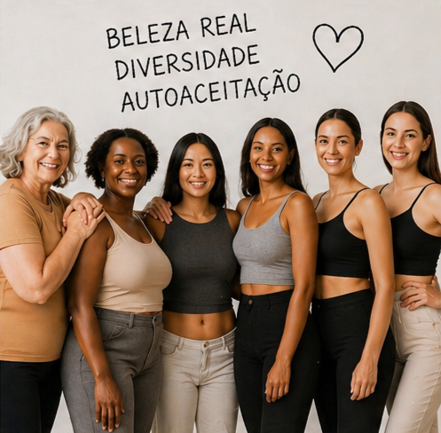
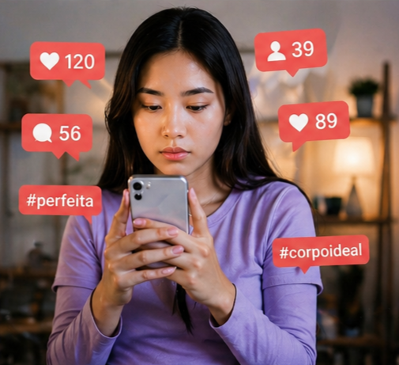
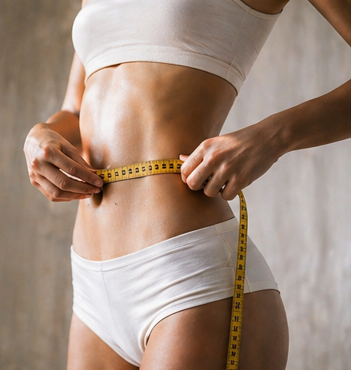
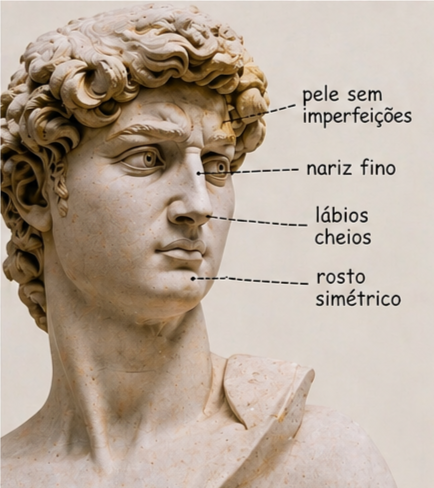
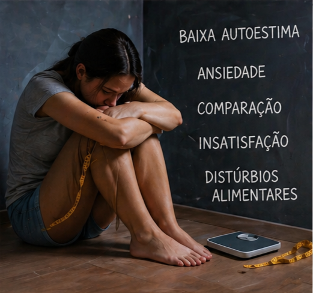

O que são padrões de beleza?
Os padrões de beleza são ideias criadas pela sociedade sobre o que é considerado bonito. Eles mudam com o tempo e variam de cultura para cultura.

Hoje em dia, as redes sociais mostram muito um padrão de corpo magro e definido, o que faz muitas pessoas se sentirem pressionadas a seguir esse modelo.

De onde vem essa pressão?
- Mídias sociais como Instagram e TikTok
- Publicidade e moda
- Celebridades e cultura pop

Impactos na sociedade
Psicológico: baixa autoestima, ansiedade e insegurança.
Social: bullying e julgamentos pela aparência.
Físico: dietas perigosas e procedimentos desnecessários.
Econômico: empresas lucram com a insegurança das pessoas.

Movimentos de resistência
- Body Positive
- Moda inclusiva
- Valorização da diversidade
A beleza não é única, Cada pessoa tem seu valor independente da aparência.
